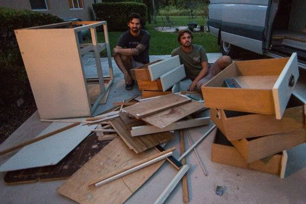

As Justin mentioned in his post, "Preserving the Legacy of a Sprinter Van," our new home on wheels came already converted and ready to be lived in. The previous owner, Jack, did a tremendous job insulating, soundproofing, and building it out to meet the needs of he and his wife for the traveling that they did. However, our needs are much different than theirs, mostly because we're going to be living in it for a full year instead of a couple weeks at a time. In order to make the changes we feel are necessary to meet our needs, we had to deconstruct some of what they had already built.

As easy as it sounds to pull some shelves, drawers, and a kitchen counter out of a van, I assure you it's anything but easy. Beside the fact that neither Justin nor myself are by any means carpenters, Jack did a heck of a job securing each piece of furniture to the floor, walls, and ceiling of the van. He then fastened each piece of furniture to each other, ensuring that they wouldn't go sliding all over the place while driving.
This is all fine and dandy until it comes time to remove it. It took us a solid 8 hours over the span of 2 days to get the van cleared out. We borrowed Dad's power drill and went to town, separating each fixture from the wall, ceiling, and adjacent pieces of furniture. For those parts that just wouldn't come apart, taking a hammer to it seemed to do the trick. It was the perfect remedy for pent up frustrations, too. Although it gave us more trouble than we had anticipated, we saw through it and managed to have quite a bit of fun pulling it all apart (sorry, Jack).
Jack had also installed a shower inside that we didn't plan on utilizing. So we had to remove it as well as the drain that ran through the floor of the van to a reservoir attached underneath. This proved to be a daunting task so we had to ask for help from Justin's buddy, Dave, who is a wizard with metal. Dave helped us get the drain out and welded a patch over the hole.
Now that the van is pretty much empty, we're gearing up to put in our flooring. If it goes in the same fashion as the demolition process, it should be challenging for us and entertaining for you. Stay tuned, folks.